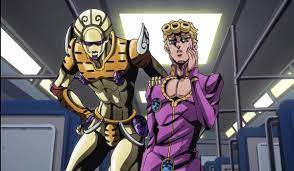

I. Qu'est-ce que Jojo's Bizzare Adventure?
Jojo's Bizzare Adventure est un manga/animé crée par Hirohiko Araki sortie en 1986. Il raconte l'histoire d'une lignée,
la lignée des Joestar à travers le temps, où les protagonistes pour chaque "parties"(saisons) correspond à un Joestar différent.
Par exemple, la partie 1 (saison 1) de Jojo's Bizzare Adventure se déroule à la fin du XIXeme siècle, on suit Jonathan Joestar et Dio Brando qui seront les deux protagonistes et antagonistes respectivement de cette partie. Dans la partie 2, on suit Joseph Joestar, qui est un descendant de Jonathan Joestar. Cette partie ce déroule pendant la seconde guerre mondiale/mileu du XXème siècle. Le manga en est à sa 10ème parties tandis que l'animé a adapté le manga jusqu'à la partie 6. La partie 7 n'étant toujours pas annoncé en animé.
II. Les "Joestar"
Voici un tableau qui présente les noms des 6 premiers "Joestar" (les protagonistes des 6 parties):
| Personnages | Partie |
|---|---|
| Jonathan Joestar | Partie 1 |
| Joseph Joestar | Partie 2 |
| Jotaro Kujo | Partie 3 |
| Higanshikata Josuke | Partie 4 |
| Giorno Giovanna | Partie 5 |
| Jolyne Kujo | Partie 6 |
III. Les pouvoirs
Dans l'univers de Jojo's Bizzare Adventure, de la partie 1 à 2, nos protagonistes tels que Jonathan Joestar, ou William Anthonio Zeppeli (allié de Jonathan) affrontent des vampires. Ceux-ci ne peuvent être tués qu'avec le Soleil, ou avec une technique "d'onde", que Jonathan Joestar va apprendre pour faire face à ses ennemis.
De la partie 3 à 6, le système de combat est complètement différent, on y introduit la notion de "Stand", qui correspond à la représentation de notre force mentale. Ceux qui manient un "Stand" sont appelés les utilisateurs de Stand, et seuls les utilisateurs de Stand peuvent voir d'autre Stand. La majorité des gens n'ont pas de "Stand", et de même dans la partie 1 et 2, la majorité des gens ne peuvent utilisés des techniques "d'ondes". Voici un utilisateur de Stand avec son Stand :
IV. Les antagonistes
L'antagoniste principal de la première partie est Dio Brando, fils adoptif de George Joestar, le père de Jonathan Joestar. Il devient une menace ensuite pour la famille Joestar qui l'a accueilli.
Kars, chef des hommes du pilier, est le méchant de la partie 2 de Jojo. Il est sans doute considéré, dans sa forme ultime, comme le plus fort des antagonistes dans Jojo.
Dio, dans une toute nouvelle forme, affrontera la nouvelle génération des Joestar dans la partie 3.
Yoshikage Kira, dans la partie 4 est un tueur en série qui cherche à rester anonyme, mais les personnages principaux vont lui mettre des bâtons dans les roues...
Diavolo, chef d'un gang de criminel en Italie, avec son puissant Stand "King Crimson", cherche a régner en maître sur sa ville...
Et enfin Enrico Pucci, antagoniste principal de Stone Ocean est un prêtre qui souhaite réaliser le plan secret de Dio...
Retour au menu principal
Annonces :
Appuyer sur les images à gauche ou bien sur les liens en bas pour avoir plus d'informations sur chaques parties de Jojo's Bizzare Adventure
Sortie de Steel Ball Run (animé): Pas confirmé
Part 1 : Phantom Blood
Part 2 : Battle Tendency
Part 3 : Stardust Crusaders
Part 4 : Diamond is unbreakable
Part 5 : Golden Wind
Part 6 : Stone Ocean